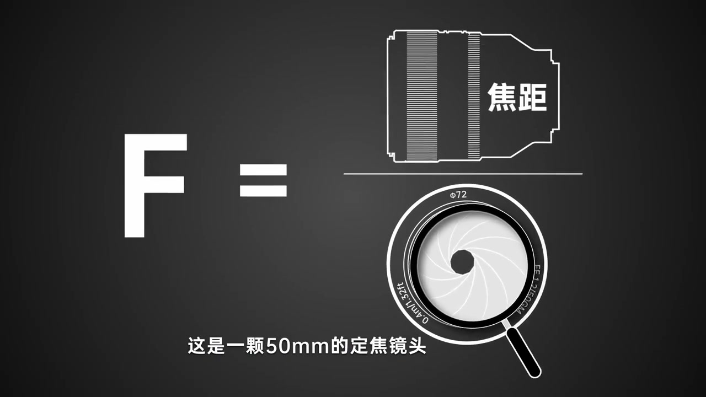
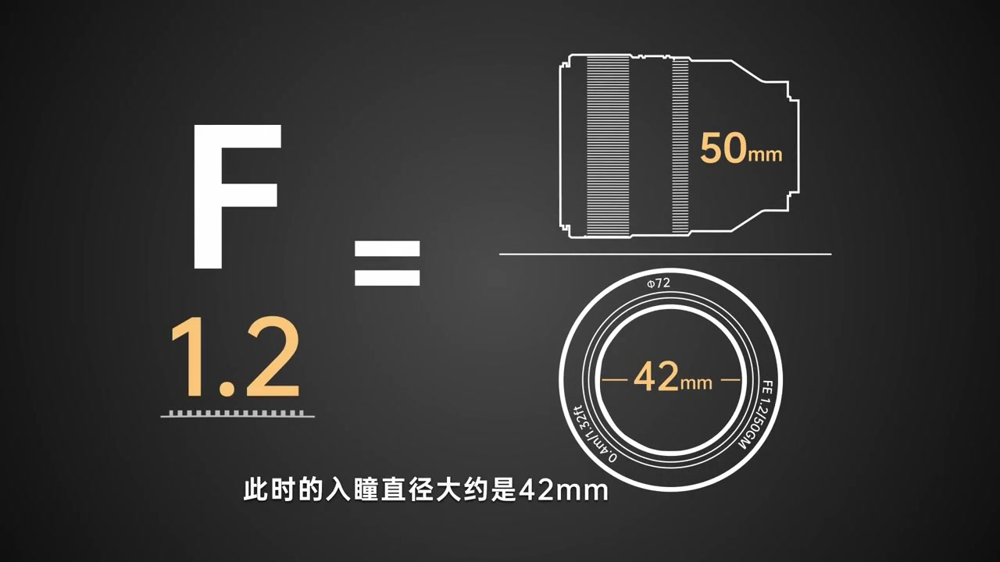
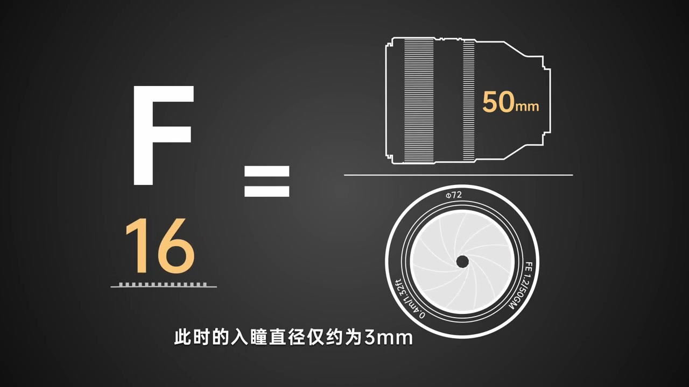
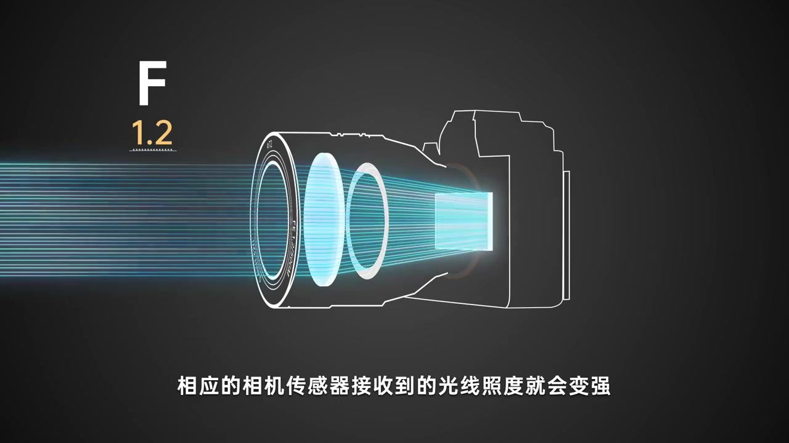
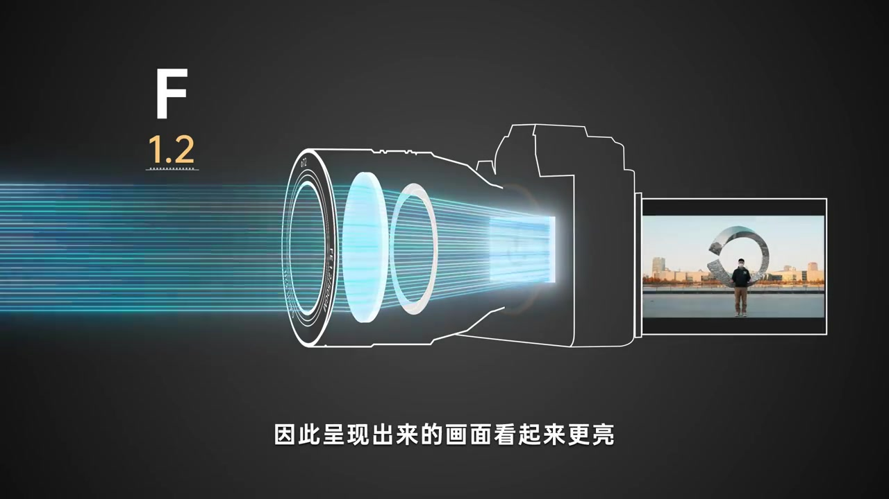
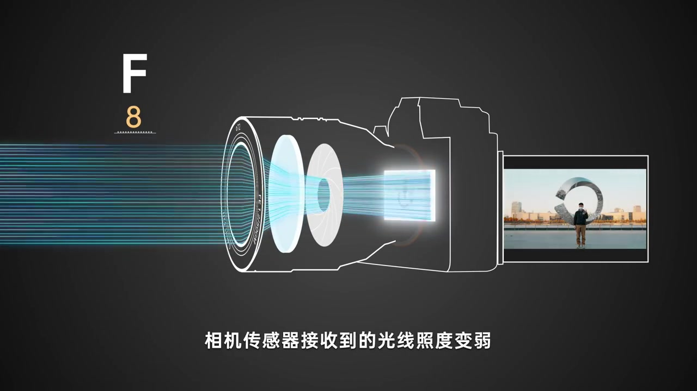
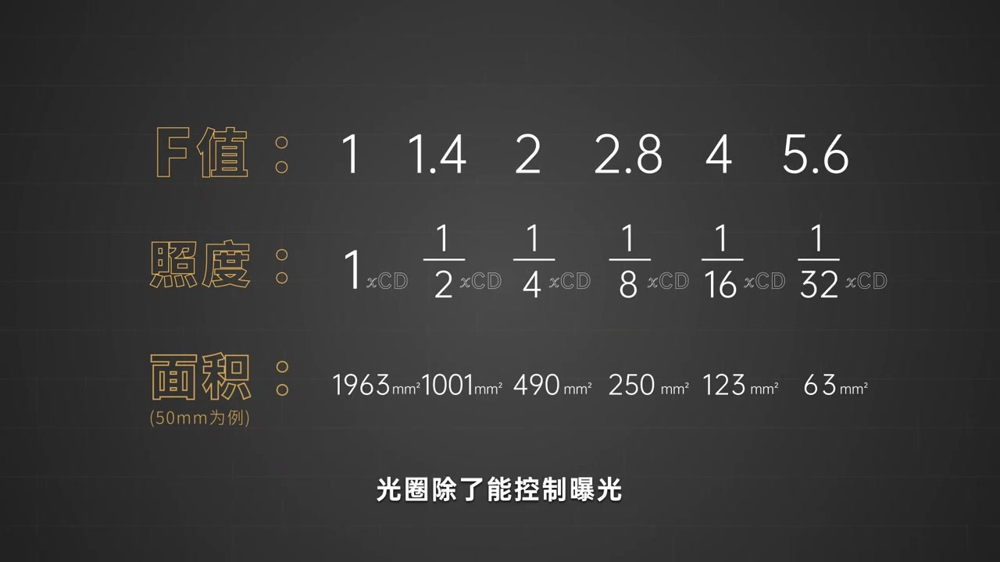

开场：先把 F 值公式摆上桌
动画用深色底铺开公式：大写 F 等于「焦距 ÷ 入瞳直径」。分子是镜头侧视轮廓里的「焦距」，分母是 FE 1.2/50GM 正视图里的光圈开孔——旁白先点题：这是一颗 50 毫米定焦。
画面字幕：「这是一颗50mm的定焦镜头」
说明：Whisper 把「入瞳直径」识成「入桶直径」、把「每改变」识成「没改变」等。下文叙述以可见字幕与画面公式为准；页面末尾仍完整保留全部 Whisper 分段。

最大光圈 f/1.2：入瞳大约 42mm
光圈拨到最大 f/1.2。分子标 50mm，分母标出约 42mm——旁白说「根据公式我们可以算出」，字幕同步写出：此时入瞳直径大约是 42mm（50 ÷ 1.2 ≈ 41.7）。
画面字幕：「此时的入瞳直径大约是42mm」

收到 f/16：入瞳只剩大约 3mm
同一支 50mm，光圈收到 f/16。公式左边变成 F16，旁白对比：「此时的入瞳直径仅约为 3mm」。从约 42mm 到约 3mm，光通孔肉眼就能感到差了一个数量级——为后面「怎么控曝光」铺垫。
画面字幕：「此时的入瞳直径仅约为3mm」

调大光圈：入瞳变大 → 画面更亮
旁白收束：「明白了这些，我们就不难理解光圈是如何控制曝光的。」动画切到相机剖面：F1.2 时大量青色光线穿过镜片打到传感器；机背 LCD 给出同一广场人像样张——看起来更亮。
画面字幕：「因此呈现出来的画面看起来更亮」


调小光圈：入瞳变小 → 画面更暗
反过来：光圈收到 F8 左右，光阑开孔变小，进入传感器的光线变稀。字幕写「相机传感器接收到的光线照度变弱」，样张同一广场构图明显压暗——不是场景变了，是通光量变了。
画面字幕：「因此呈现出来的画面就会更暗」

关键关系：F 值与照度近似平方反比
文字卡抛出核心量化：光圈 F 值与成像面照度是近似平方反比。随后列出常见档位序列 1、1.4、2、2.8……字幕强调「F 值每改变约 1.4 倍，成像面照度便会相应成两倍变化」——也就是摄影里常说的「一档」。
画面字幕：「也就是F值每改变约1.4倍」
补一张表：照度与光通面积同节奏变化
旁白提醒：成像面照度跟光通面积不能混为一谈，但用不同 F 值算出的入瞳直径再去算光通面积，同样符合「一档约两倍」的规律。画面给出 F1—F5.6 对照表：照度按 1、1/2、1/4……递降，50mm 示例面积从约 1963mm² 收到约 63mm²。
画面字幕：「同样也是符合这个规律的」
收尾伏笔：光圈还管景深
对照表还没翻完，旁白已经转向下一章：「光圈除了能控制曝光，还会影响一个非常重要的成像特性——景深。」本集停在曝光与入瞳计算；景深留给后续。
画面字幕：「还会影响一个非常重要的成像特性」
